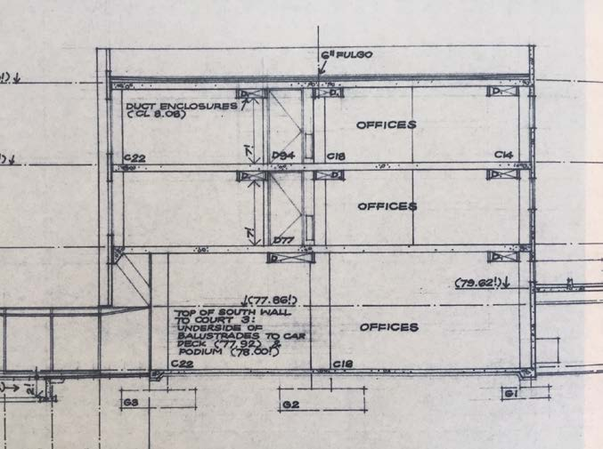
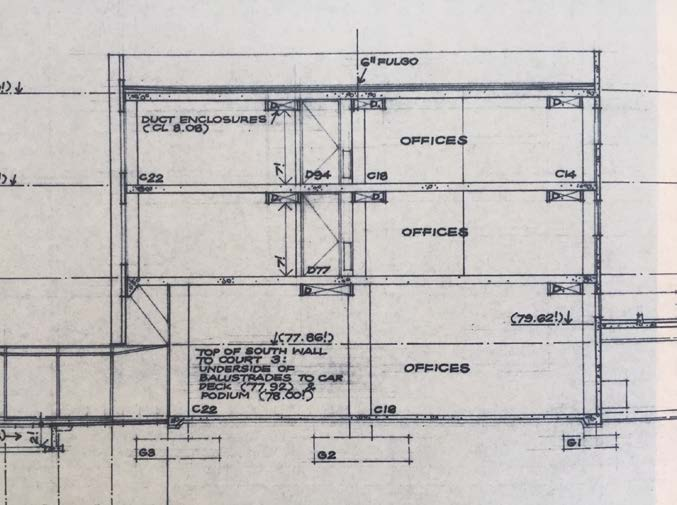

History
Churchill House was built by the Winston Churchill Memorial Trust of Australia. The Trust began consideration of erecting a building of its own in 1967 and formed a building committee in 1968. In 1969 it acquired a lease for land on Northbourne Avenue, the current site, and engaged the architect Robin Boyd to design the building.The original building was to provide offices for the Trust and in addition was to provide rental office accommodation for commercial tenants as a means of generating income for the Trust.
The cost of the works was about $1 million. The building was officially opened on 14 April 1972. Boyd died in 1971 before completion, and W K Williams was engaged by the Trust as its site representative to replace Boyd. During the 1990s the glass pavilion was replaced by the current north wing.
Features of the original design included:
- a glass exhibition pavilion, on the site of the current north wing, which housed a display on the work of the Trust;
- the flat roof area of the east and south wings which was intended to be a roof terrace; and
- accommodation in the building included a board room, dining room, reception area, bar and kitchen.


 

{kind=link}

{kind=link}